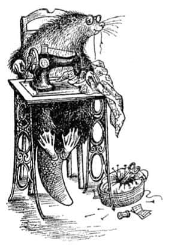

Kunduzlarla Bir Gün
İki oğlan arkada fısıldaşırken, iki kız aniden “Ah!” diye bağırdı ve durdu.
“Ardıçkuşu!” diye bağırdı Lucy, “Ardıçkuşu uçup gitti.” Gerçekten öyleydi – kuş görünürlerde yoktu.
“Şimdi ne yapacağız?” dedi Edmund, ‘Ben sana demedim mi?’ dercesine Peter’e bir bakış fırlatarak.
“Şşşşş! Bakın!” dedi Susan.
“Ne?” dedi Peter.
“Orada, sol tarafta, ağaçların arasında yürüyen bir şey var.”
Hepsi pür dikkat bakıyordu ama hiçbiri kendini güvende hissetmiyordu.
“Yine yürüyor işte” dedi Susan az sonra.
“Bu kez ben de gördüm” dedi Peter. “Hâlâ orada. Şu büyük ağacın arkasına saklandı.”
“Ne acaba?” dedi Lucy, ürkmüş görünmemeye çalışarak.
“Her neyse” dedi Peter, “bizden saklanıyor. Görülmeyi istemeyen bir şey.”
“Eve dönelim” dedi Susan. Sonra kimse yüksek sesle söylememesine karşın, herkes aniden biraz önce Edmund’un Peter’e fısıldadığı gerçeğin farkına vardı. Kaybolmuşlardı!
“Neye benziyor?” dedi Lucy.
“Bir tür – bir tür hayvan” dedi Susan, sonra, “Bakın! Bakın! Çabuk! İşte orada” dedi heyecanla.
Hepsi, ağacın arkasından onlara bakan bıyıklı, tüylü yüzü görmüştü. Fakat o, bu kez hemen geri çekilmedi. İnsanlar sessiz olmanızı istediklerinde parmaklarını nasıl dudaklarına koyarsa, hayvan da pençesini öyle ağzının önüne getirdi. Sonra gözden kayboldu. Çocuklar nefeslerini tutmuş duruyorlardı.
Az sonra yabancı canlı, ağacın arkasından çıktı, sanki biri onları gözlüyormuş gibi her tarafı gözden geçirdi, “Şşşşşş” dedi ve bulunduğu yerdeki sık ormanlıkta onu izlemelerini belirten işaretler yaparak bir kez daha ortadan kayboldu.
“Ne olduğunu biliyorum” dedi Peter, “Bir kunduz. Kuyruğunu gördüm.”
“Takip etmemizi istiyor” dedi Susan “ve ses çıkarmamamız için bizi uyarıyor.”
“Biliyorum” dedi Peter, “sorun, gidip gitmeyeceğimiz. Sen ne düşünüyorsun Lu?”
“Ben onun iyi bir kunduz olduğunu düşünüyorum” dedi Lucy.
“Evet ama nereden bilebiliriz ki?” dedi Edmund.
“Bunu göze almamız gerekmiyor mu?” dedi Susan. “Demek istiyorum ki burada dikilip durmanın bize bir faydası yok ve benim canım akşam yemeği istiyor.”
O anda kunduz başını ağacın arkasından uzatarak el kol işaretleriyle onları içtenlikle çağırdı.
“Haydi” dedi Peter, “bir deneyelim. Birbirinizin yakınında durun. Eğer düşman olduğu ortaya çıkarsa bir kunduzla baş edebilmemiz gerek.”
Böylece çocuklar birbirlerine yaklaşıp ağacın arkasına yürüdüler. Gerçekten de kunduz hâlâ oradaydı; fakat geri geri gidiyor, boğuk ve gırtlaktan gelen bir sesle onlara, “Gelin, daha içeriye gelin. Tam buraya. Açıklıkta emniyette değiliz” diye fısıldıyordu. Birbirine çok yakın dört ağacın bulunduğu ve dalları birbirine karıştığı için altına kar yağmayan, ayaklarının altında kahverengi toprağı ve kuru çam yapraklarını gördükleri karanlık bir yere geldiklerinde yeniden onlarla konuşmaya başladı.
“Siz Âdemoğulları ve Havvakızları mısınız?” dedi.
“Evet, onlardanız” dedi Peter.
“Şşşşşşş!” dedi Kunduz, “O kadar yüksek sesle konuşma lütfen. Burada bile güvende değiliz.”
“Neden, kimden korkuyorsun?” dedi Peter. “Burada bizden başka kimse yok.”
“Ağaçlar var. Onlar her zaman dinlerler. Çoğunluğu bizden yana, fakat bize onun adına ihanet edecek ağaçlar da var, kimi kastettiğimi anlıyorsunuz” diyerek defalarca başını salladı.
“Eğer taraf tutmaktan söz ediyorsak” dedi Edmund, “senin dost olduğunu nasıl bilelim?”
“Kaba davranmak istemiyoruz Bay Kunduz” diye ekledi Peter, “fakat görüyorsunuz ki biz yabancıyız.”
“Haklısınız, haklısınız” dedi Kunduz. “İşte kanıtım.” Bu sözlerle elindeki küçük, beyaz bir şeyi gösterdi. Lucy “Ah, evet, bu benim mendilim – zavallı Bay Tumnus’a verdiğim mendil” diye söylenirken, hepsi şaşkınlıkla Kunduz’un eline bakıyorlardı.
“Haklısın” dedi Kunduz. “Zavallı adam, onu tutuklayacaklarının haberini önceden aldı ve bunu bana verdi. Eğer ona bir şey olursa sizi burada karşılayıp kendisine götürmemi—” Burada Kunduz’un sesi kısıldı ve esrarengiz bir biçimde başını birkaç kere salladı. Sonra çocuklara olabildiğince yakına gelmelerini (öyle yakın ki bıyıkları yüzlerini gıdıklıyordu) işaret ederek zor işitilen bir fısıltıyla ekledi:
“Aslan’ın harekete geçtiğini söylüyorlar – belki gelmiştir bile.”
O anda çok tuhaf bir şey oldu. Çocuklardan hiçbiri Aslan’ın kim olduğunu sizin bildiğinizden fazla bilmiyordu. Fakat Kunduz bu sözleri söyler söylemez herkes tamamen değişik bir duyguya kapıldı. Belki bu sizin de rüyalarınızda olmuştur. Birisi anlamadığınız bir şey söyler, fakat rüyanızda sanki çok büyük bir anlamı varmış gibi gelir size: Ya bütün rüyayı kâbusa dönüştürecek korkunç bir anlamı vardır ya da hoş bir anlamı; sözlerle anlatılamayacak kadar hoş bir anlamı vardır ve rüyayı öylesine harika yapar ki, tüm yaşamınız boyunca hatırlar ve sürekli aynı rüyayı görmek istersiniz. Şimdi her şey aynen böyleydi. Aslan’ın adı anılınca, çocuklardan her biri içlerinde bir şeylerin hopladığını hissetmişti. Edmund gizemli bir korku hissetmişti. Peter aniden cesur ve maceracı duygulara kapıldı. Susan, sanki harika bir kokunun ya da nefis bir müzik nakaratının havaya yayılır gibi olduğunu hissetti. Ve Lucy bir sabah uyanıp, tatilin ya da yazın başlangıcı olduğunu anladığınızda hissettiğiniz duygulara kapıldı.
“Ya Bay Tumnus?” dedi Lucy. “O nerede?”
“Şşşşşş” dedi Kunduz, “burada değil. Gerçekten konuşabileceğimiz ve akşam yemeği yiyebileceğimiz bir yere götürmem gerek sizleri.”
Edmund’un dışında herkes, şimdi Kunduz’a güvenme konusunda güçlük çekmiyordu. Edmund dahil hepsi “akşam yemeği” lafını duydukları için çok memnundular. Bu nedenle, şaşırtıcı bir biçimde hızlı adımlarla, onlara yol gösteren yeni arkadaşlarının ardından ormanın en sık yerlerinde bir saatten fazla koşarcasına yürüdüler. Önlerinde ağaçlar aniden seyreldiğinde ve yol dik bir şekilde yokuş aşağı uzandığında hepsi çok aç ve yorgun olduklarını hissediyordu. Bir dakika sonra gökyüzünü görebildikleri bir açıklığa (güneş hâlâ parlamaktaydı) çıktılar ve kendilerini aşağıdaki nefis bir manzaraya bakar buldular. Dibinde oldukça büyük bir nehrin aktığı – en azından, donmuş olmasaydı akacak olan – dar ve dik bir vadinin kenarında duruyorlardı. Hemen altlarında nehrin önünü kesen bir bent yapılmıştı. Bendi gördüklerinde, hepsi, kunduzların sürekli bent kurduklarını hatırladılar ve bunu da Bay Kunduz’un yapmış olduğundan tamamıyla emin oldular. Şimdi, Kunduz’un yüzünde alçakgönüllü bir ifade vardı; hani insanların yüzlerinde, yetiştirdikleri bir bahçeyi ziyaret ederken ya da yazdıkları bir hikâyeyi okurken gördüğünüz türden bir ifade. Susan “Ne harika bir bent!” dediğinde bu yalnızca normal bir nezaket gösterisiydi. Ancak Bay Kunduz bu kez “Şşşşş” yerine, “Önemsiz bir şey! Önemsiz bir şey! Hem henüz bitmedi daha!” dedi.
Bendin yukarısında derin bir havuz olması gereken, ancak şimdi koyu yeşil buzdan, düzgün bir yüzey vardı. Bendin altında, çok aşağılarda yine buzlar vardı fakat düzgün değil de coşkuyla akan köpüklü ve dalgalı şekiller biçiminde donmuşlardı. Bentten suyun damlamış ya da fışkırmış olduğu yerlerde, bendin yan tarafı, sanki saf şekerden yapılmış çiçekler, çelenkler ve çiçek kabartmaları gibi parıldayan, buz saçakları duvarıyla kaplanmıştı. Ortalarda, kısmen bendin üzerinde, kocaman bir arı kovanına benzeyen tuhaf, küçük bir ev vardı. Evin bacasından duman tütmekteydi ve onu gördüğünüz an (özellikle karnınız açsa) aklınıza pişmekte olan yemekler gelirdi ve kendinizi olduğunuzdan daha da aç hissederdiniz.
Diğerlerinin gördükleri aşağı yukarı bunlardı, ama Edmund başka bir şey fark etmişti. Nehrin biraz aşağısında, küçük bir vadiden çıkıp ona karışan başka bir nehir daha vardı. Edmund vadinin ötelerine baktığında iki küçük tepe görmüştü ve önceki gün lamba direğinin yanında ayrılırlarken Beyaz Cadı’nın kendisine gösterdiği iki tepenin bunlar olduğuna adı gibi emindi. “Ve bunların arasında” diye düşündü, “onun evi olmalı, iki kilometre ya var ya yok.” Sonra Türk lokumunu ve kral olmayı düşündü. (‘Peter’in bundan hoşlanıp hoşlanmayacağını merak ediyorum’ dedi kendi kendine) ve aklına kötü düşünceler geldi.

“İşte geldik” dedi Bay Kunduz, “Bayan Kunduz bizi bekliyormuş gibi görünüyor. Ben önden gideyim. Fakat dikkatli olun, kaymayın.”
Bendin üstü yürünebilecek kadar genişti. Ancak buzla kaplı olduğundan (insanlar için) rahatça geçilebilecek bir yol da değildi. Bendin bir yanı su yüzeyiyle aynı seviyede olmasına karşın öbür yanında derin bir uçurum vardı. Tek sıra olup nehrin yukarı ve aşağı yakasını ta uzaklara kadar görebildikleri orta yerine kadar Bay Kunduz’u takip ettiler. Tam ortaya ulaştıklarında evin kapısına gelmişlerdi.
“Biz geldik Bayan Kunduz” dedi Bay Kunduz, “onları buldum. İşte Âdemoğulları ve Havvakızları.” Hep birlikte içeriye girdiler.
Lucy’nin eve girerken fark ettiği ilk şey bir vızıltı oldu. Gördüğü ilk şeyse köşede oturmuş ağzında iplikle, o vızıltıyı çıkaran dikiş makinesinin başında hararetle çalışan nazik görünümlü bir dişi kunduzdu. Çocuklar içeriye girer girmez çalışmayı bırakıp ayağa kalktı.
“Sonunda gelebildiniz!” dedi buruşuk, yaşlı pençelerini uzatarak. “Nihayet! Bu günleri görebileceğimi düşünmek zordu! Patatesler kaynıyor, çaydanlık ıslık çalıyor ve sen Bay Kunduz, sanırım bize balık getireceksin.”
“Getiririm elbette” dedi Bay Kunduz ve dışarı çıktı (Peter de onunla çıktı). Havuzun üzerindeki buzda yürüdü. Küçük baltasıyla her gün kırarak açık tuttuğu deliğe yaklaştı. Yanlarında bir kova getirmişlerdi. Bay Kunduz deliğin yanına sessizce oturdu (soğuğa hiç aldırmıyor görünüyordu), dikkatle deliğe baktı ve göz açıp kapayana kadar pençesini suya daldırarak şahane bir alabalık yakaladı. Yeterince balık yakalayana dek aynı şeyi tekrarladı.
Bu arada kızlar çaydanlığı doldurması, sofrayı kurması, ekmek kesmesi, ısınması için tabakları fırına koyması, evin bir köşesindeki fıçıdan Bay Kunduz için kocaman bir sürahi bira doldurması ve kızartma tavasını ocağa koyup kızdırması için Bayan Kunduz’a yardım ediyorlardı. Lucy, Bay Tumnus’un evine hiç benzememesine karşın, kunduzların çok rahat ve küçük bir evleri olduğunu düşünüyordu. Ne kitapları ne de resimleri vardı. Karyolalar yerine duvara sabitlenmiş ranzaları vardı. Tavana asılmış jambonlar, soğanlar ve duvarlara asılı lastik çizmeler, dalgıç giysileri, baltalar, makaslar, el kürekleri, beller ve sıva taşıyacak kaplar, balık ağları, olta kamışları ve torbalar vardı. Masanın üzerindeki örtü temiz olmasına karşın çok kabaydı.
Kızartma tavasının tam da hazır olduğu anda, dışarıda bıçağıyla temizlediği balıklarla, Bay Kunduz ve Peter içeriye girdiler. Yeni yakalanmış balıkların kızartılırken nasıl koktuğunu, aç çocukların onların bir an önce pişmesini nasıl istediklerini ve Bay Kunduz “hemen hemen hazır” demeden önce nasıl da iyice acıktıklarını hayalinizde canlandırabilirsiniz. Lucy, Bayan Kunduz’a alabalıkların servisinde yardım ederken, Susan patateslerin suyunu süzüp ocağın yanında kurusun diye yeniden tencereye koydu. Böylece birkaç dakika sonra herkes taburelerini masaya yaklaştırırken (Bayan Kunduz’un ateşin yakınındaki özel salıncaklı sandalyesi dışında bütün tabureler üç ayaklıydı kunduzların evinde) yaşamlarının en keyifli anına hazırlanıyorlardı. Çocuklar için bir sürahi süt (Bay Kunduz bira içiyordu) ve masanın ortasında, herkesin patatesleri için istediği kadar alabileceği koyu sarı, büyük bir parça tereyağı vardı. Çocuklar yarım saat önce canlı olan ve kızartma tavasından az önce çıkmış bir tatlısu balığını yemekten daha güzel bir şey olmadığı konusunda fikir birliğindeydiler (ben de onlarla aynı fikirdeyim). Balığı bitirdiklerinde Bayan Kunduz bir sürpriz yaptı. Fırından, buharı üzerinde, büyük ve harika bir reçelli kek çıkardı ve aynı zamanda çaydanlığı ateşin üzerine sürdü. Böylece reçelli keklerini bitirdiklerinde çay servise hazırdı. Çayını alan herkes taburesini geriye doğru çekiyor ve duvara yaslanıp mutlulukla, uzun uzun mırıldanıyordu.
“Evet, şimdi” dedi Bay Kunduz, boş bira bardağını itip çayını kendine doğru çekerek, “pipomu yakıp güzelce kıvamına getirene kadar beklerseniz iş konuşabiliriz. Yine kar yağıyor” diye ekledi gözlerini pencereye çevirerek. “Böylesi daha iyi. Bu, ziyaretçimiz olmayacağı anlamına geliyor. Biri izlemeyi denerse ayak izlerimizi bulamaz.”